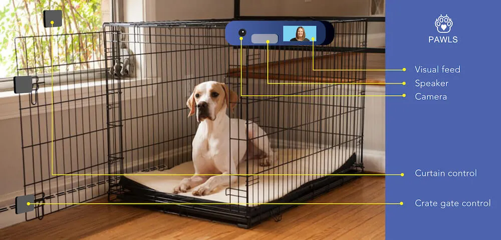
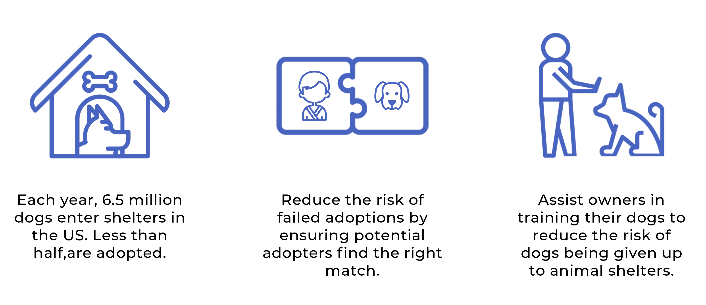
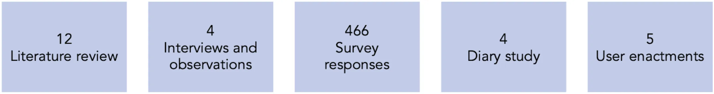
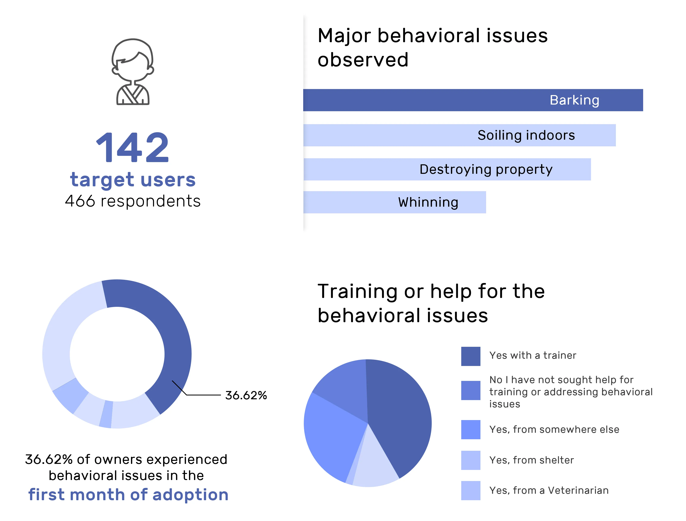
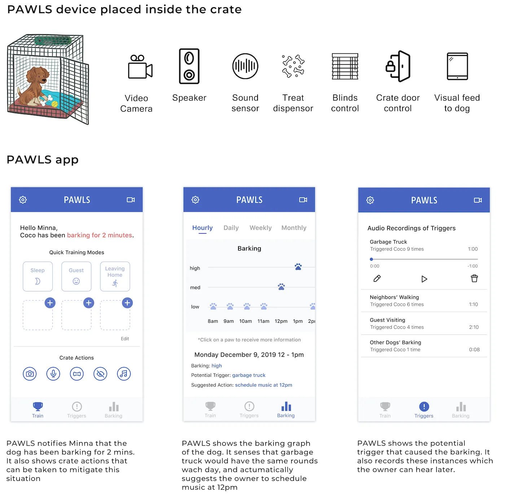

PAWLs Smart Kennel
SI 612 - Pervasive Interaction Design
For my pervasive design course, I was tasked with conducting user research to help solve a problem that involves an interactive physical prototype. The solution was a physical PAWLS device + PAWLS mobile application. Throughout the semester, multiple user research design methodologies were used, including a Competitive Analysis, Contextual Inquiry, Surveys, Diary Studies, User Enactments, Wireframing, Hardware & Software Prototyping, Usability Testing, and a Concept Video.
Overview
PAWLS is a smart crate system that decreases disruptive barking in dogs with positive reinforcement and stimulus masking methods. It can collect and analyze data around your dog’s barking, what triggered the barking, and provide personalized recommendations for users detailing steps that the owner can take to aid the training. There are two components to PAWLs, the physical crate that uses pervasive technology and the mobile application that gives users the power to access all the collected data in digestible form and it also allows them to control the crate.
PAWLS could be called a comprehensive training solution that guides new dog owners through the training process and facilitates the development of healthy behaviors and a strong bond between owner and companion. Based on the findings, I believe this system will address the needs of dog owners whose companions are experiencing behavioral issues.
Motivation

Each year, approximately 6.5 million companion animals enter shelters in the US. Less than half of these animals are adopted. One of the main reason why animals are returned is behavioral issues. In order to address this issue of pet homelessness, I decided to explore how ubiquitous computing can do two things: decrease the number of dogs being given up by their previous owners to shelters and ensure that adopted dogs stay adopted and remain in their new homes.
Key Insights

- Common issues that were cited as reasons for return include destructive or otherwise unacceptable behaviors
- Reggae and soft rock came out as the best genres for reducing stress, barking and heart rates
- Behavioral issues are both the number one complaint of new pet owners, and the number one reason animals are returned to shelters
- Barking, whining, and other maladaptive noise-related behavior were among the most common issues experienced by newly adoptive pet owners
- 80% owners sought help from some kind of professional, including behaviorists, trainers, veterinarians, or adoption specialists
- Positive reinforcement was a method preferred to regulate bad behavior
- Users preferred having data for everything
Surveys
For the survey, I wanted to understand how I could define the scope and concepts by focusing on what specific behavioral issues dog owners are dealing with, and how common they occur.

Diary Studies
For the diary study, I wanted to understand how dog owners addressed behavioral issues right as they’re occurring, along with the context surrounding those issues.
Once the diaries were returned, each entry in the behavioral log was carefully analyzed, including each specific trigger, location, the dog’s response, and how the owner responded to the dog’s inappropriate behavior. An Affinity wall was generated in Trello, where a thematic analysis was done to help discover any common themes between the participants and their dogs.
User Enactments
The experience prototyping study involved conducting five user enactments with each of the five participants for a total of 25 user enactments to answer the four research questions. Through the user enactments, I wanted to understand users’ perception and the strengths and weaknesses of the product in varying scenarios.
{kind=link}
{kind=link}
Findings and Design Implications
While earlier research informed us about user’s general pain points, it was in this stage of the research that I was able to directly observe users interacting with the product in the way they would in their home. As a result, I was able to observe the user's authentic reaction to the suggested features, rather than just abstract ideas. It was these reactions that helped us gain a more accurate understanding of if and how the ideas were addressing user needs and the pain points I had previously identified.
- Owners would like to have more control over the system, and rely less on automation. Setup should include features to learn about user's preferences, notify users, and give control over actions
- Being unable to react is just as bad as being uninformed Notifications should be solutions-oriented and give the owner a sense of agency.
- The system should train the owner as much as it trains the dog Data gathered should recommend yours about future plan of action, and educate users.
Final Concept
PAWL's camera system and accompanying app lets owners check in with their dogs from anywhere and even talk to their dogs using the speakers. Using sound sensors, PAWLS can even detect when the dog is barking and attempt to mitigate the negative behavior. With treat dispenser, the owner can give treats to the dog anytime with just one click from the app. PAWLS app even integrates with smart blinds and the crate door to help alleviate any stimulation that may be distressing your dog.
The PAWLs smart kennel is constantly sensing your dog’s emotional levels using sensors to help recognize and react to various triggers that may occur when the dog’s owner isn’t home. Using that data, PAWLs will aid the dog owner in properly training the dog so it will be less distressed when the owner is not home. A mobile app that communicates with a web-based database & IoT cloud platform would have to be set up to properly connect a PAWLs user to the device when they aren’t home. Due to the sensitive nature of placing microphones and cameras in an owners home, it’s important to create a privacy policy that clearly states how the data will be used and protected with the use of encryption.

Physical Prototype
After researching various IoT microcontrollers, I decided on utilizing a Raspberry Pi 3 Model B+ instead of an Arduino or Particle Board. The Raspberry Pi’s quad-core processor is best suited for processing and streaming the high-definition video PAWLs required. The Raspberry Pi’s extensive DIY community helped guide the software implementation, which involved running open-source “Motion” software, which offers extensive options related to recording video streams. I also needed to identify a camera that could record the entire area within a kennel using a fish-eye style lens.
Materials included:
- Raspberry Pi 3 Model B+
- Night Vision Fish-Eye Camera Module
- Bluetooth Speaker
- Raspbian OS
- Motion Camera Software
{kind=link}
{kind=link}
{kind=link}
{kind=link}
Mobile Application Prototype
PAWLS focuses on helping new owners by providing an assistant that senses when the dog is agitated, scared, or in need of their owners. PAWLS is essentially a smart crate system that attempts to decrease disruptive barking in dogs. It has the capability to collect data about a dog’s barking, its potential triggers, and suggests actions that the owner can take to help their dog. There are two components to Pawls, the physical crate that uses pervasive technology and the mobile app which gives users the power to access all the collected data in digestible form and control the crate.
Each year, approximately 6.5 million companion animals enter shelters in the US. Less than half of these animals, however, are adopted. In order to address the rampant issue of pet homelessness, I decided to explore how ubiquitous computing can do two things: decrease the number of dogs being given up by their previous owners to shelters and ensure that newly adopted dogs stay adopted and remain in their new homes.
Interactive Prototype (Click it!)